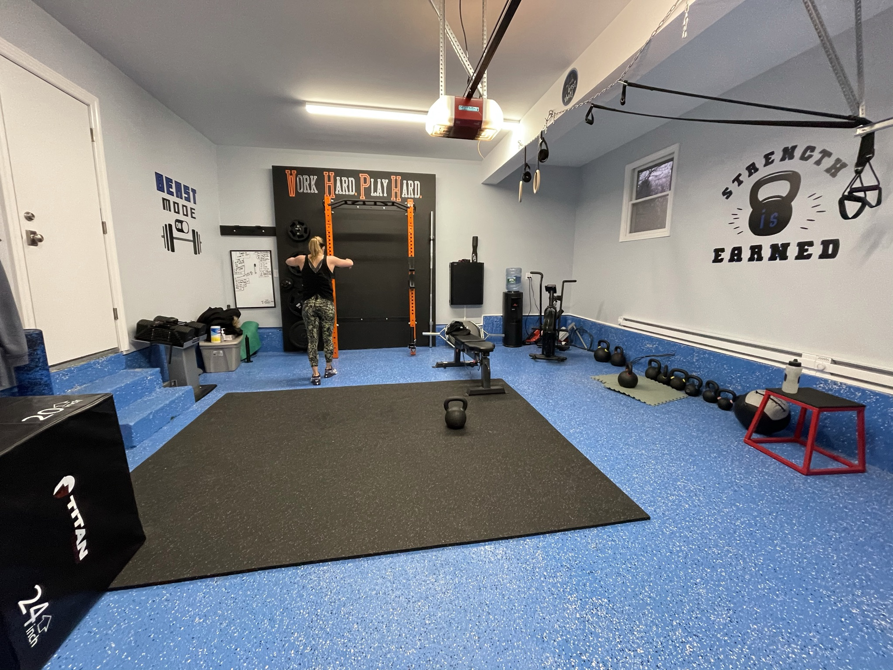

Distinct zones, without losing the open floor.
The space brings together an orange-and-black rack, lifting platform, kettlebells, rings, suspension straps, ropes, and conditioning equipment. The broad blue floor remains visible around the central platform, giving the room a clear identity while preserving space to move and train.
It’s a completed garage gym rather than a luxury showpiece: the design emphasis is on a clear strength station, accessible conditioning tools, and functional-training options within one room.
See more Long Island home gym projects or start a conversation about your own gym.
Planning a garage gym around movement
A central lifting platform needs room for loading the bar and moving safely around the rack. Rings, ropes, suspension straps, and kettlebells also need their own clear working areas. For a similar garage, map those movements first, then decide which equipment belongs on the perimeter and how much open floor to preserve.
Dix Hills project views
